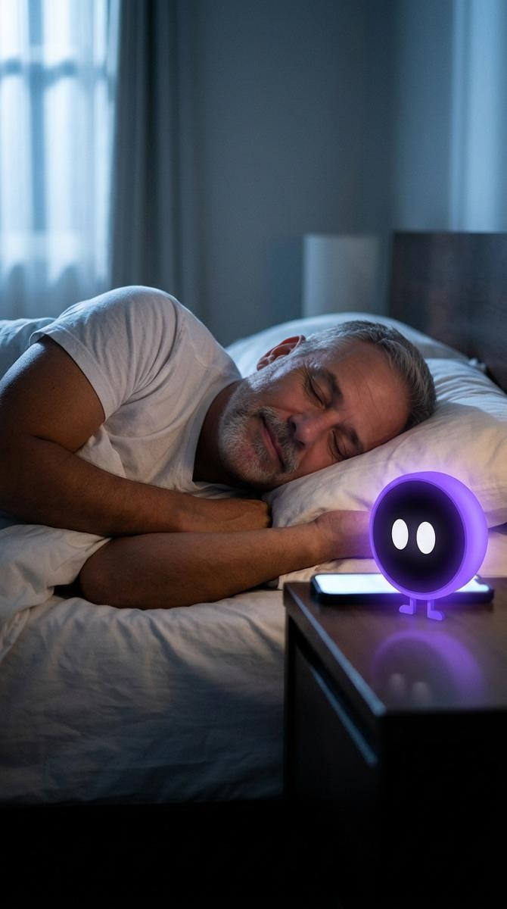

Automatización · Demo
Tu WhatsApp contesta, agenda y da seguimiento, aunque estés con un paciente.
Juega a ser el paciente: toca las opciones del chat y mira a la derecha (o abajo, en celular) lo que se activa detrás.
Consultorio Vida PlenaAsistente automático · simulado
Lo que pasa detrás de la conversación
- AL INSTANTERespuesta inmediata
El paciente recibe atención en cuanto escribe, a cualquier hora.
- ARMContacto registrado
Se guarda el motivo de consulta y el día que prefiere.
- AGENDACita apartada
Se aparta el espacio y el consultorio recibe el aviso.
- SEGUIMIENTORecordatorio programado
Un día antes le llega un recordatorio, y después un “¿cómo sigues?”.

Mientras tú descansas, tu WhatsApp sigue atendiendo. Tú decides qué contesta solo y cuándo pasa a una persona.